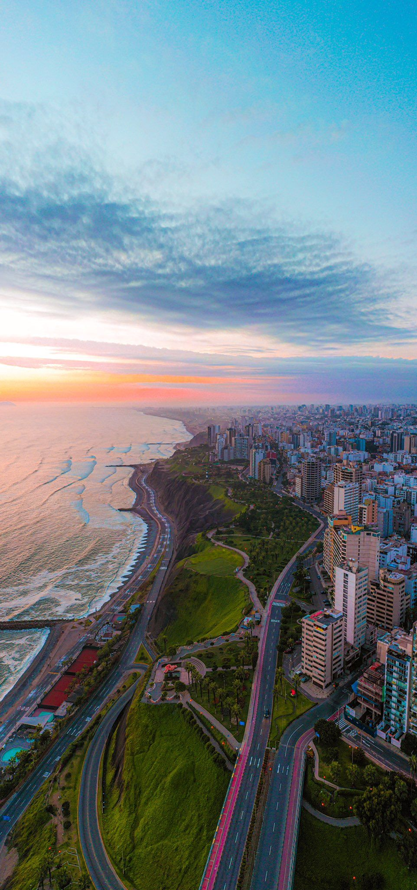

About Me
Hello! I am from Lima, Peru. I am excited to learn about dynamic web development in WDD 131. I enjoy learning new technologies and applying them to create useful and interesting web pages.
In my free time, I enjoy dancing and exercising.
Lima, Peru
Lima, the capital of Peru, is the 4th largest city in the Americas and is located in the valleys of the Chillón, Rímac and Lurín rivers. It is known for its rich colonial history, vibrant culinary scene, and beautiful coastline overlooking the Pacific Ocean.